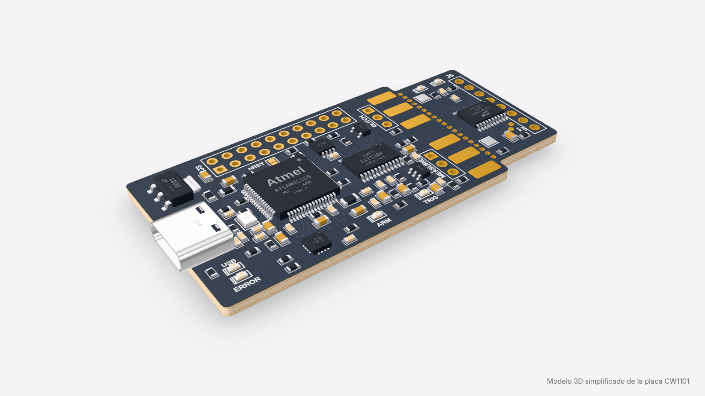
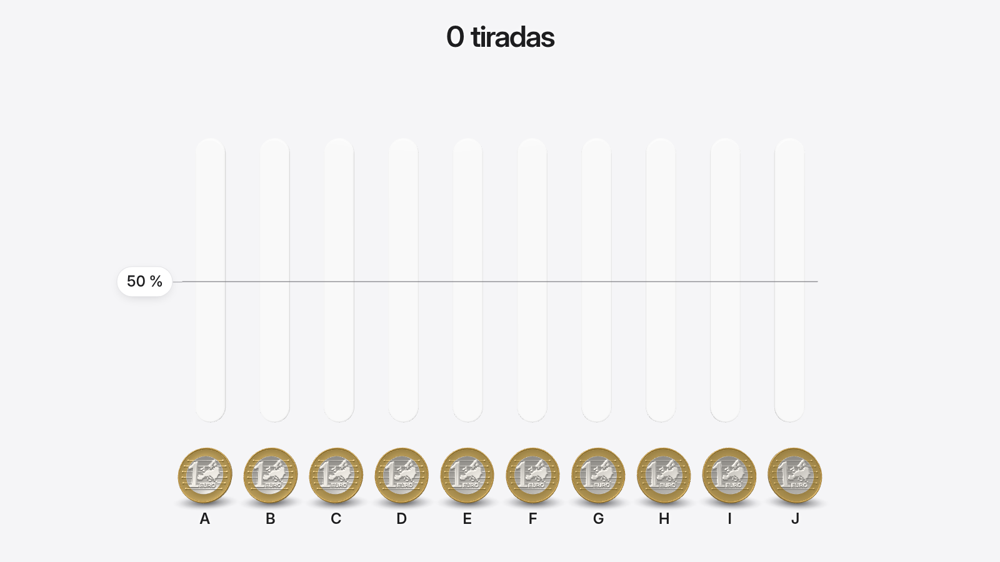
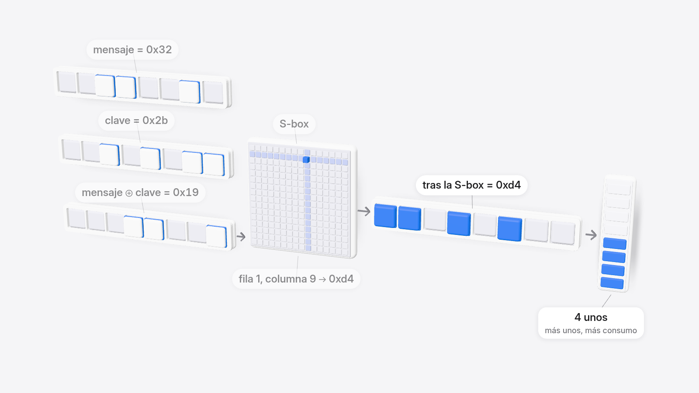
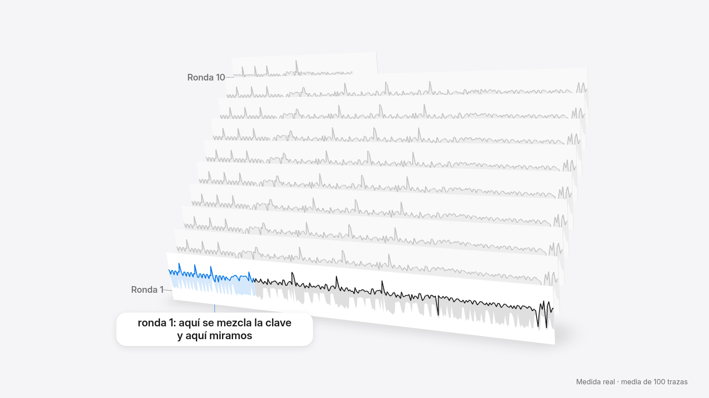
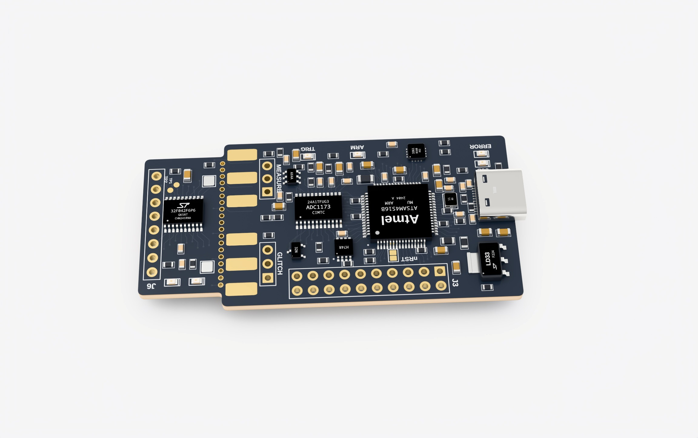
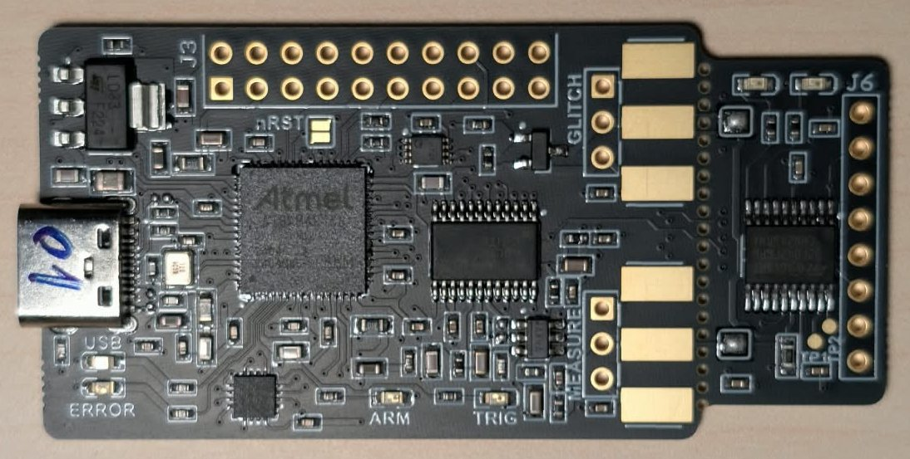
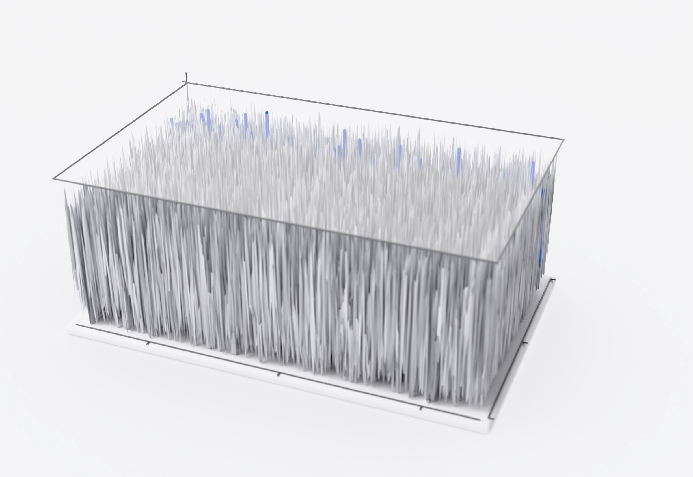

Leer una clave AES en el consumo
Ataque CPA sobre AES-128 en un ChipWhisperer-Nano
- Juan Diego Bermúdez Ureba
- Brian Polo Caballero
- Alberto Bartolomé Iruela
- Roberto Sánchez Martín
Vulnerabilidades Hardware
ETSI Informática, Universidad de Málaga

Una de estas monedas está trucada

¿Un chip puede chivarse de su clave?
Sin leer su memoria y sin romper AES.
Hardware de laboratorio y una clave que no protege nada real.
De la fuga a la clave
- 1La fugaPor qué el consumo delata los datos
- 2El ataqueDónde mirar y cómo ganarle al azar
- 3En la placaEl montaje, la demo y cuántas trazas
- 4DefensasQué lo encarece y cuánto
- 5ConclusionesPuntos fuertes y débiles
El consumo depende de los datos
En media, un byte con más unos gasta algo más de corriente.

Un byte del mensaje (el texto claro) y uno de la clave.
AES los mezcla con un XOR, bit a bit.
Una tabla fija, la S-box, lo cambia por otro byte.
Cuantos más unos tiene ese byte, más corriente gasta.
Con cada mensaje cambia ese byte, y con él la corriente.
El punto débil: la primera ronda
- Aquí cada byte depende solo de un byte del mensaje, que mandamos nosotros, y de uno de la clave.
- Byte a byte, como un PIN cifra a cifra: 16 × 256 candidatos, no todas las claves.
Ver las rondas sin saber nada

Una traza: la corriente del chip mientras cifra. Aquí, la media de 100.
Un dibujo que se repite cada 1014 ciclos: son las rondas.
Con cualquier clave, el dibujo es el mismo: mirar no basta.
Pero dice dónde mirar: al principio de la ronda 1.
Así se nota el candidato correcto
- Adivinaun valor para un byte de la clave: un candidato.
- Predicecon cada mensaje, cuántos unos saldrán de la S-box.
- Comparacon lo que midió la placa. ¿Se parecen?
Cada punto es una traza grabada: 400 en total, en el instante en que el chip pasa el byte 0 por la S-box.
Esto es el CPA (2004). Su antecesor, el DPA (1999), solo miraba un bit.
En el juego → en el ataque
Una moneda
Un candidatouno de los 256 valores de un byte de la clave
Una tirada
Una trazala corriente mientras cifra un mensaje nuevo
El % de caras50 % si es normal
El parecido con el consumode 0 a 1; cerca de 0 si es falso
La trampasale cara el 60 %
La fugael consumo se parece a lo que predice la clave correcta
Lo que puede hacer el azarse estrecha con más tiradas
El azar de los 255 falsosbaja con más trazas
La trucada se sale
El correcto se saleya tenemos ese byte
Con las mismas trazas se juegan 16 partidas a la vez: una por byte, una letra de vuestra palabra.
Lo que medimos
Una traza es la corriente del chip mientras cifra un mensaje.

Víctima · STM32F042F6P6: el chip que cifra con AES-128 Resistencia de 27 Ω (shunt) en la alimentación de la víctima: su tensión sigue a la corrienterecorrido esquemático Medidor (ADC) de 8 bits · una muestra en cada ciclo del chip: 7,5 millones por segundo Capturador · ATSAM4S16B: espera la señal de inicio, guarda las muestras y las manda al portátil por USB Viene regalado: el chip avisa cuando empieza y el medidor va a su ritmo, así que las trazas salen alineadas- medida
- muestras
- reloj
- señal de inicio
- 5000muestras por traza, un número de 0 a 255 cada una
- 18,6trazas/svelocidad de captura

¿Cuántas trazas harán falta?
Para la clave entera. ¿Más o menos que vuestras tiradas?
En directo
Qué acaba de pasar

parecido tiempo candidato {clave}, el correcto {clave} · parecido {correcto} lo que puede hacer el azar · hasta {mejorFalso} el mismo byte, otra vezpuesto del correcto entre 2561.º
Con tan pocas, cualquier candidato parece trucado.
El correcto ya va arriba, pero el azar aún lo tapa.
La cresta del correcto se sale del azar.
Solo queda en pie el candidato correcto.
Como con las monedas: la trampa no crece, lo que baja es el azar.
¿Cuántas trazas hicieron falta?
trazas: con ellas, 9 de cada 10 repeticiones sacan la clave entera
Una repetición es el ataque con trazas escogidas al azar de las 1000 grabadas. Hicimos 100, como 100 partidas del juego.
La respuesta: unas 100 trazas.
Las monedas: unas 1000 tiradas · el ataque: unas 100 trazas
Defensas: esconder la trampa
Ocultar medido
Barajar el orden: la trampa de un byte solo asoma en una de cada 16 tiradas. Esperar al azar: no saber cuándo mirar.
Enmascarar no medido
Mezclar cada valor con un número al azar, nuevo en cada cifrado: darle la vuelta a la moneda sin avisar.
Medido en nuestra placa, con tres versiones de un AES propio
- ×3,6trazas al barajar: 475 en vez de 132, para acertar 9 de cada 10 vecesSolo barajamos la S-box: la segunda cresta seguía en su sitio.
- 0 de 16bytes con esperas al azar, ni con 2000 ni con 20 000 trazas
- 7 de 16si el atacante suma ventanas de 300 muestras, como una foto de exposición larga, con esas 20 000
Ninguna es una garantía absoluta: encarecen el ataque.
No rompe AES: rompe una implementación
¿Un chip puede chivarse de su clave? Sí: el nuestro, con unas 100 trazas.
Puntos fuertes
- Divide la clave: 16 búsquedas de 256 candidatos.
- Pide poco: conocer los mensajes y medir la corriente, con una placa y un portátil.
- Rápido: unos segundos de captura.
Puntos débiles
- Acceso físico: hace falta, salvo que el sistema exponga su consumo al software.
- Muchos cifrados, misma clave: aquí, del orden de cien.
- Laboratorio: la señal de inicio y el reloj venían regalados.
¿Preguntas?
- r0zh.github.io/vul-hw-grupalLa explicación interactiva, con las trazas medidas
- github.com/r0zh/vul-hw-grupalCódigo, datos, memoria y esta presentación
Artículo base: J. Mishra y S. K. Sahay, «Modern Hardware Security: A Review of Attacks and Countermeasures», arXiv:2501.04394, 2025.
¿Peso o distancia de Hamming?
Usamos el peso porque no sabemos qué valor guardaba antes el registro.
Peso
Cuenta los unos del valor: es la distancia a una referencia cero.
Distancia
Cuenta los bits que cambian respecto al valor anterior. Es la propuesta general de Brier et al.
Lo que dicen las medidas
Con el peso, el correcto llega a |ρ| entre 0,586 y 0,645 en los 16 bytes. La distancia no la hemos probado.
Memoria, secciones 2.5 y 4.5.
¿Están bien las trazas?
Sí: alineadas al ciclo, con ruido de un escalón del ADC y sin saturar la zona de la fuga.
Alineación
Trazas de un mismo texto claro que caen a desplazamiento cero de la media, sin procesarlas.
Ruido
Mediana de la desviación típica por muestra: un escalón del ADC, 1/256 ≈ 0,0039.
Saturación
Muestras en el mínimo del ADC, de 1 500 000. Ninguna en la zona de la fuga.
Medidas reales del 13 de noviembre de 2026. Memoria, sección 4.2.
Límites del enmascaramiento
Si está bien implementado, frena el CPA de primer orden. Pero no es invulnerable.
Primer orden
En el modelo ideal, con v ⊕ m y m aleatoria, cada valor por separado no depende de la clave.
Segundo orden
Combinar dos instantes, el de la máscara y el del valor enmascarado, recupera la dependencia (Messerges, 2000).
En software, ojo
Si una parte sobrescribe a otra, la transición las combina. Balasch et al.: orden d solo garantiza ⌊d/2⌋.
No lo hemos medido. Memoria, sección 3.1.
¿Y en un dispositivo real?
No lo hemos medido: depende sobre todo del ruido y de la alineación.
Lo medido
Los picos medidos dan una SNR de 0,523 a 0,712. Para esa SNR, el modelo simulado predecía de 77 a 151 trazas.
Trazas con más ruido
En simulación, de SNR 0,2 a 0,02 se pasa de 295 a 2220 trazas.
Lo que aquí venía hecho
El disparo lo da el firmware y el ADC comparte reloj con el chip. Un atacante real tendría que alinear las trazas por su cuenta.
Una placa, una clave y una sesión: las cifras no se trasladan sin más. Memoria, secciones 3.4, 4.3 y 4.5.
¿Y un AES por hardware?
Queda fuera del trabajo. Lo que sí sabemos es general.
Fuera del alcance
Atacamos un AES en software. Los AES por hardware quedaron fuera del trabajo, igual que los ataques electromagnéticos.
Defensa de circuito
La lógica balanceada, como WDDL, equilibra el consumo de cada bit. Se decide al diseñar el chip.
El método es general
Vale para cualquier cifrado en el que un paso no lineal mezcle un dato conocido con un trozo pequeño de la clave.
Memoria, secciones 1.3, 3.3 y 5.1.
¿Qué es exactamente el «parecido»?
La correlación de Pearson, en valor absoluto, entre lo que predice cada candidato y lo medido. Gana el mayor en algún instante.
¿Por qué tras la S-box?
Justo tras el XOR, el candidato con los bits al revés predice lo contrario y empata en |ρ|. La S-box rompe el empate.
El azar
Un falso da del orden de 1/√N: con cuatro veces más trazas, la mitad. El correcto no baja así.
Lo medido
Con 1000 trazas, el correcto da entre 0,586 y 0,645; el mejor falso, entre 0,154 y 0,210.
Las monedas, simuladas, siguen la misma ley: su franja del azar se estrecha como 1/√N. Memoria, secciones 2.1, 2.4 y 4.3.